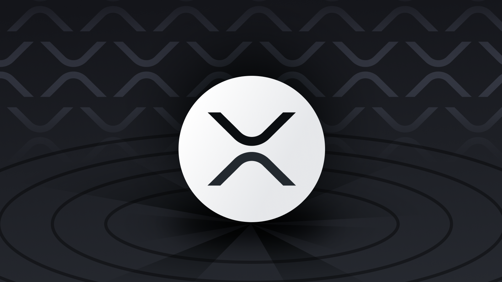
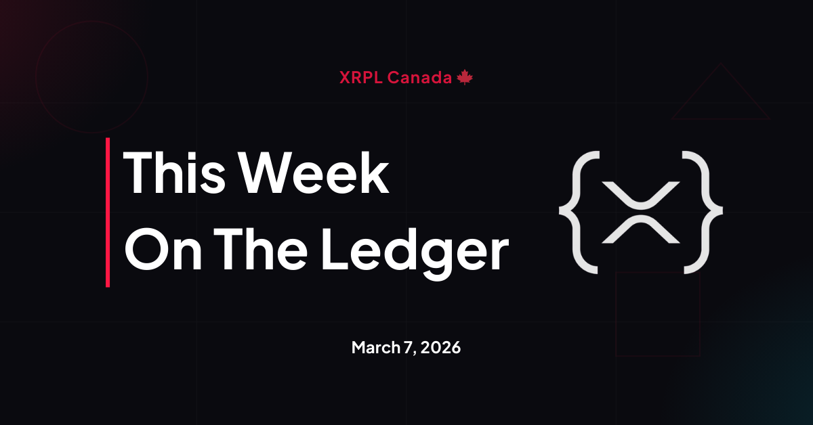
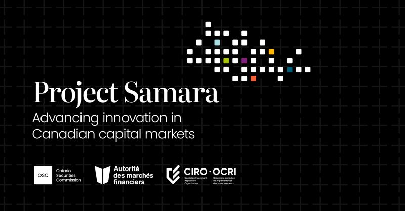

March 15, 2026
Technical
rippled 3.1.2: What the Patch Fixes and Why the Timing Matters
rippled 3.1.2 : Ce que corrige le patch et pourquoi le timing compte
Analysis of the March 2026 rippled 3.1.2 security patch, what it fixes, the collaborative disclosure process, and what it signals about XRPL's security governance maturity.
Analyse du patch de sécurité rippled 3.1.2 de mars 2026, ce qu'il corrige, le processus de divulgation collaboratif, et ce qu'il signale sur la maturité de la gouvernance de sécurité XRPL.
Read Full Story
Lire l'histoire complète
March 14, 2026
Weekly Roundup
This Week on the Ledger
Cette semaine sur le Ledger
Protocol infrastructure updates, privacy architecture with Confidential MPTs, on-chain asset growth reaching $2.3B, and the week's key developments across the XRP Ledger ecosystem.
Mises à jour de l'infrastructure du protocole, architecture de confidentialité avec les MPT confidentiels, croissance des actifs en chaîne atteignant 2,3 milliards $, et les développements clés de l'écosystème XRP Ledger.
Read Full Story
Lire l'histoire complète

March 7, 2026
Weekly Roundup
This Week on the Ledger
Cette semaine sur le Ledger
Ripple Prime enters NSCC directory, CLARITY Act stalls on stablecoin yield dispute, Batch amendment vulnerability patched, and a developer proposes an XRPL options sidechain.
Ripple Prime entre dans le répertoire NSCC, la loi CLARITY bloquée sur le différend sur les rendements des stablecoins, vulnérabilité du Batch corrigée, et un développeur propose une sidechain d'options XRPL.
Read Full Story
Lire l'histoire complète

March 6, 2026
Ecosystem
Canada's First Tokenized Bond
Première obligation tokenisée du Canada
On March 5, 2026, the Bank of Canada, RBC, TD, and Export Development Canada published the results of Project Samara. A real $100 million CAD bond settled on a distributed ledger.
Le 5 mars 2026, la Banque du Canada, RBC, TD et Exportation et développement Canada ont publié les résultats du projet Samara. Une véritable obligation de 100 millions CAD réglée sur un registre distribué.
Read Full Story
Lire l'histoire complète

February 28, 2026
Weekly Roundup
This Week on the Ledger
Cette semaine sur le Ledger
XRP Australia 2026 brought together 400+ attendees at Crown Towers Sydney. Brad Garlinghouse addressed the 'flip the switch' narrative, Monica Long and David Schwartz took the stage.
XRP Australie 2026 a réuni plus de 400 participants à Crown Towers Sydney. Brad Garlinghouse a abordé le récit du 'basculement', Monica Long et David Schwartz sont montés sur scène.
Read Full Story
Lire l'histoire complète
March 10, 2026
Technical
The XRPL Options Sidechain: Every Detail
La Sidechain d'Options XRPL : Tous les détails
Denis Angell proposes a purpose-built derivatives chain with native options, margin trading up to 200x, WebAuthn authentication, and a trustless XPop bridge. Pre-testnet, seeking validators and audit.
Denis Angell propose une chaîne de produits dérivés dédiée avec options natives, trading sur marge jusqu'à 200x, authentification WebAuthn, et un pont XPop sans confiance.
Read Full Story
Lire l'histoire complète
February 18, 2026
Technical
XRPL February 2026 Update: Token Escrow and Permissioned DEX Activation
Mise à jour XRPL - Février 2026 : Token Escrow et DEX avec Permissions
Token Escrow (XLS-85) and the Permissioned DEX (XLS-81) activated this week on the XRP Ledger — two protocol-level primitives that unlock compliance-gated trading environments and programmable token locks for any token. The infrastructure regulated institutions have needed to settle on-chain is now native to the ledger.
Token Escrow (XLS-85) et le DEX à accès restreint (XLS-81) ont été activés cette semaine sur le XRP Ledger — deux primitifs au niveau du protocole qui débloquent des environnements d'échange conformes et des verrous de jetons programmables.
Read Full Story
Lire l'histoire complète
January 3, 2026
Year in Review
Ripple: This Year in Review
Ripple : Cette année en revue
Ripple Labs transformed from a specialized cross-border payments company into a comprehensive digital asset financial services powerhouse in 2025, executing one of the most ambitious strategic expansions in fintech history through $2.7 billion in acquisitions, regulatory victories, and a $40 billion valuation.
Ripple Labs s'est transformé d'une entreprise spécialisée dans les paiements transfrontaliers en une puissance complète de services financiers d'actifs numériques en 2025, exécutant l'une des expansions stratégiques les plus ambitieuses de l'histoire de la fintech.
Read Full Story
Lire l'histoire complète
December 29, 2025
Year in Review
XRP Ledger: This Year in Review
XRP Ledger : Cette année en revue
The XRP Ledger concluded 2025 as one of the most technologically advanced and actively developed blockchain networks. A comprehensive review of the technical evolution, ecosystem growth, and strategic positioning that defined XRPL's trajectory this year.
Le XRP Ledger a conclu 2025 comme l'un des réseaux blockchain les plus avancés technologiquement et activement développés. Un examen complet de l'évolution technique, de la croissance de l'écosystème et du positionnement stratégique.
Read Full Story
Lire l'histoire complète
December 21, 2025
Education
XRPL Metrics Framework: Measuring Real Infrastructure Adoption Beyond Price Speculation
Cadre de métriques XRPL : Mesurer l'adoption réelle de l'infrastructure au-delà de la spéculation sur les prix
The question most people ask: "Is XRP going up?" The better question for institutions, developers, and serious stakeholders: "Is XRPL becoming unavoidable infrastructure?" This framework provides the measurements to answer that question months before markets do.
La question que la plupart des gens se posent : "Le XRP va-t-il augmenter ?" La meilleure question pour les institutions, les développeurs et les parties prenantes sérieuses : "Le XRPL devient-il une infrastructure incontournable ?"
Read Full Story
Lire l'histoire complète
December 20, 2025
Technical
XRPL December 2025 Update: Critical Validator Upgrades and Protocol Evolution
Mise à jour XRPL décembre 2025 : Mises à niveau critiques des validateurs et évolution du protocole
December brings significant developments to the XRP Ledger ecosystem, marked by critical infrastructure updates and the groundwork for major DeFi capabilities. Essential information for node operators, developers, and institutional stakeholders.
Décembre apporte des développements importants à l'écosystème XRP Ledger, marqués par des mises à jour d'infrastructure critiques et les bases de capacités DeFi majeures.
Read Full Story
Lire l'histoire complète
November 9, 2025
Education
How Money Moves: The Evolution of Payment Systems in Canada
Comment l'argent circule : L'évolution des systèmes de paiement au Canada
From cash and checks to instant digital transactions, the way Canadians send and receive money has transformed. Understanding this evolution reveals why blockchain-based payment rails like XRPL are the next step.
Du comptant et des chèques aux transactions numériques instantanées, la façon dont les Canadiens envoient et reçoivent de l'argent a été transformée.
Read Full Story
Lire l'histoire complète
November 8, 2025
Weekly Roundup
This Week on the Ledger
Cette semaine sur le Ledger
Ripple raises $500M at $40B valuation, RLUSD powers Mastercard pilot, Swell 2025 brings Wall Street to the table, and XRP ETF speculation heats up. This week marked a turning point for institutional crypto adoption.
Ripple lève 500 M$ avec une valorisation de 40 milliards $, RLUSD alimente le pilote Mastercard, Swell 2025 amène Wall Street à la table, et les spéculations sur l'ETF XRP s'intensifient.
Read Full Story
Lire l'histoire complète
November 8, 2025
Ecosystem
Banks Using RippleNet: Institutional Adoption at Scale
Banques utilisant RippleNet : adoption institutionnelle à grande échelle
From Santander to Standard Chartered, major financial institutions are using RippleNet and XRP to transform cross-border payments. Here's who's building on XRPL—and what it means for Canada.
De Santander à Standard Chartered, les grandes institutions financières utilisent RippleNet et XRP pour transformer les paiements transfrontaliers.
Read Full Story
Lire l'histoire complète